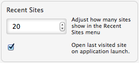
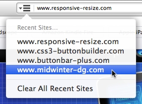

- Open the application preferences, either from the main application menu or from the customize menu
 , or use the keyboard shortcut
⌘,
, or use the keyboard shortcut
⌘, - Enter a value in the input field for 'Recent Sites'.
 - The Recent Sites list will now be limited to the amount of your choice.
